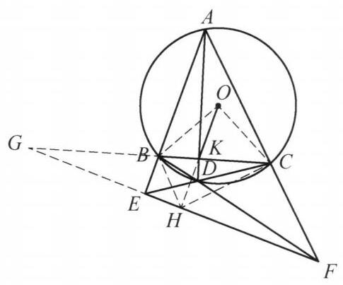

80 例 5：两圆相交与四点共圆综合证明
80.1 题目
设圆 O 为 \triangle {ABC} 的外接圆,点 K 在边 {BC} 上且不为 {BC} 的中点, D 为 {AK} 延长线上一点, {AB} 与 {CD} 的延长线交于点 E,{AC} 与 {BD} 的延长线交于点 F , 且 {OK} \perp {EF} . 证明: D 在圆 O 上.
80.2 参考解答
如图 5-9,设 {OK} 的延长线与 {EF} 交于点 H,{CB} 与 {FE} 的延长线交于点 G . 在完全四边形 {ABEDCF} 中,对角线 {BC} 被对角线 {AD} , {EF} 调和分割,即 G, B, K, C 为调和点列,又 \angle {GHK} = {90}^{ \circ } ,故 {HK} 平分 \angle {BHC} . 结合 {OB} = \; {OC} ,知 O, B, H, C 四点共圆. 于是
\angle {EHB} = {90}^{ \circ } - \angle {BHO} = {90}^{ \circ } - \angle {BCO}
= \frac{1}{2}\angle {BOC} = \angle {BAC},

图 5-9
则 A, B, H, F 四点共圆.
同理可得, A, E, H, C 四点共圆.
所以, H 为完全四边形 {ABCDEF} 的密克点,因此, C, D, H, F;B, D, H , E 分别四点共圆,故
\angle {ABD} = \angle {EHD} = \angle {DCF},
即 A, B, C, D 四点共圆. 原问题得证.
注: 由于 A, B, D, C 共圆等价于完全四边形 {ABEDFC} 的密克点在 {EF} 上, 因此只需证明 H 为密克点,即可得到四点共圆.
80.3 解题思路与分析
这段证明之所以让人觉得“费解”、像变魔术一样，是因为教材把逆向探索的脚手架全部拆掉了，只留下了顺向推导的结果。在竞赛几何中，这段证明并不是凭空硬想出来的，而是由一个著名的命题背景（逆向思维）和三个标准几何模块的“条件反射”（正向破题）拼接而成的。
我们可以从“正向条件反射”和“逆向命题背景”两个维度，把想出这个证明的真实思维过程还原出来：
80.3.1 一、 正向破题：竞赛生看到条件时的三个“条件反射”
即便不知道这道题的背景，一个熟练的几何解题者在看到题目条件时，也会按以下三个固定模块一步步触发思路：
80.3.1.1 1. 看到“完全四边形 + 垂直” \implies 触发【调和点列与角平分线】
题目线索：四边形 ABDC 的两组对边延长交于 E, F，对角线 AD, BC 交于 K，且出现了一条与 EF 垂直的线 OK \perp EF。
思维触发： 在射影几何中，只要出现 E = AB \cap CD、F = AC \cap BD、K = AD \cap BC，延长 BC 交 EF 于 G 是绝对的标准动作。因为这会自动生成一个调和点列 (G, B; K, C) = -1（即 \frac{GB}{GC} = \frac{KB}{KC}）。
关键定理：调和点列如果配合一个直角，就会立刻转化为角平分线！ > 常用引理：若 G, B, K, C 是调和点列，点 H 满足 \angle GHK = 90^\circ，则 HK 必平分 \angle BHC（且 HG 是外角平分线）。
因此，看到 OK \perp EF，自然就会设交点为 H，连结 HB, HC，把难以处理的“垂直条件”转化为极其好用的角度关系：HK 平分 \angle BHC。
80.3.1.2 2. 看到“角平分线 + OB=OC” \implies 触发【弧中点定理（四点共圆）】
题目线索：
- 刚刚证出 HK（即直线 HO）是 \angle BHC 的角平分线；
- O 是 \triangle ABC 的外心，所以 OB = OC（即 O 在 BC 的垂直平分线上）；
- 题目特意强调了一个奇怪的条件：“点 K 不为 BC 的中点”。
思维触发：为什么题目要强调 K 不是 BC 中点？ 因为在 \triangle BHC 中，\angle BHC 的角平分线（直线 HK）与底边 BC 的垂直平分线相交于点 O！ 如果 K 不是 BC 中点，说明 \triangle BHC 不是等腰三角形（HB \neq HC），这两条线不会重合，而是交于唯一一点 O。 > 几何常识（弧中点定理）：三角形顶角的平分线与底边的垂直平分线之交点，必然是该三角形外接圆上底边所对的弧中点！
既然交点 O 就是 \triangle BHC 外接圆的弧 BC 中点，那么 O, B, H, C 四点共圆 就水到渠成地浮现了。
80.3.1.3 3. 看到“外心 O 共圆” \implies 触发【圆心角转化与导角】
- 题目线索：目前我们已经有了 O, B, H, C 共圆，但还没有用到“点 A 在圆 O 上”这个条件。
- 思维触发：怎么把圆 O 上的点 A 拉进战局？ 在圆 O 中，点 A 与圆心 O 的唯一桥梁就是圆周角定理：\angle BAC = \frac{1}{2}\angle BOC。 而在等腰 \triangle OBC 中（且 \angle GHK = 90^\circ），通过 O, B, H, C 四点共圆，正好可以把 \angle EHB 转化为与 \angle BOC 相关的角： \angle EHB = 90^\circ - \angle BHO = 90^\circ - \angle BCO = \frac{1}{2}\angle BOC = \angle BAC 一旦发现 \angle EHB = \angle BAC（即 \angle FHB = \angle FAB），立刻得出 A, B, H, F 四点共圆；同理对称地得出 A, E, H, C 四点共圆。
80.3.2 二、 逆向溯源：出题人是怎么造出这道题的？（上帝视角）
如果从证明的后半段（以及文末的“注”）来看，你会发现作者突然抛出了“密克点（Miquel Point）”这个概念。其实，这道题本来就是圆内接四边形“布罗卡尔定理（Brocard’s Theorem）”经典构型的逆命题！
我们可以把题目倒过来看——假设 D 已经在圆 O 上了（即 A, B, D, C 四点共圆），在这个标准构图中会发生什么？
密克点的定义： 四条直线 AB, CD, AC, BD 两两相交，会围成四个三角形：\triangle EBC, \triangle EAD, \triangle FBA, \triangle FDC。 平面几何著名的密克定理指出：这四个三角形的外接圆必然交于同一点 M，这个点 M 就叫做完全四边形的密克点。
圆内接四边形的密克点性质（本题的真相）： 一个极其经典的定理是（即解答末尾“注”所写的内容）： > 原四边形 ABDC 内接于圆 O \iff 其完全四边形的密克点 M 恰好落在对角点连线 EF 上，且满足 O, K, M 三点共线、OK \perp EF 于点 M！
（注：在射影几何的布罗卡尔定理中，EF 是点 K 关于圆 O 的极线，因此圆心 O 与 K 的连线必然垂直于极线 EF，而垂足恰好就是密克点。）
- 还原解题者的“破案”逻辑： 出题人把“A, B, D, C 四点共圆”藏了起来，把它的性质“OK \perp EF”作为已知条件给了你。 熟练的竞赛者在读完题目的那一刻，心里就已经猜到了结局：
- “既然要求证 D 在圆 O 上，那么 OK 与 EF 的垂足 H 必定就是这个完全四边形的密克点！”
- “我怎样才能证明 H 是密克点呢？根据定义，只要证明 H 同时在其中两个三角形（\triangle FBA 和 \triangle EAC）的外接圆上，即证 A, B, H, F 共圆 和 A, E, H, C 共圆 即可！”
- “一旦证出这两个共圆，H 就是这四条直线的密克点，从而自动拥有密克点的所有共圆性质（即另外两个三角形的外接圆 C, D, H, F 和 B, D, H, E 也必然过点 H），最后导个角就能证出 A, B, C, D 共圆了！”
80.3.3 总结：整条思维链是如何合拢的？
把“正向推导”和“逆向目标”拼在一起，就能看清这道题完整的思维蓝图：
\begin{aligned} \text{【正向拆解条件】}\quad & \text{完全四边形} + OK \perp EF \text{ 于 } H \\ \xrightarrow{\text{构造调和点列 } G,B,K,C} \quad & HK \text{ 平分 } \angle BHC \\ \xrightarrow{\text{结合 } OB=OC \text{（弧中点）}} \quad & O, B, H, C \text{ 四点共圆} \\ \text{【衔接逆向目标】}\quad \xrightarrow{\text{利用圆心角 }\angle BOC = 2\angle BAC} \quad & \angle EHB = \angle BAC \implies A, B, H, F \text{ 与 } A, E, H, C \text{ 共圆} \\ \xrightarrow{\text{锁定密克点定义}} \quad & H \text{ 是密克点} \implies B, D, H, E \text{ 与 } C, D, H, F \text{ 共圆} \\ \xrightarrow{\text{最终导角}} \quad & \angle ABD = \angle EHD = \angle DCF \implies A, B, D, C \text{ 共圆}. \end{aligned}
你对其中的哪一个具体模块（比如“为什么调和点列加直角能推出角平分线”，或者“密克点的四个共圆性质”）需要进一步的推导说明吗？
80.4 分步证明
80.4.1 步骤 0：已知条件与几何图景
设圆 O 为 △ABC 的外接圆，K 为边 BC 上非中点的一点，D 为射线 AK 上一点。 直线 AB 与 CD 延长线交于 E，AC 与 BD 延长线交于 F。 过 OK 作垂线交 EF 于点 H，CB 与 FE 延长线交于点 G。 已知条件为 OK ⊥ EF（即 ∠GHK = 90°），求证：点 D 落在圆 O 上。
80.4.2 步骤 1：完全四边形调和分割 ⇒ HK 平分 ∠BHC
考察完全四边形 ABEDCF，其三条对角线分别为 BC, AD, EF。 对角线 BC 分别与另两条对角线 AD, EF 交于点 K 和点 G。 根据完全四边形的调和分割性质： 对角线 BC 被调和分割，即 (G, K; B, C) = -1，G, B, K, C 构成调和点列。 又已知 OK ⊥ EF，即点 H 对调和轭点张直角 ∠GHK = 90°。 由阿波罗尼斯圆及调和线丛性质：两射线必分别为夹角及其外角的平分线！ 故 HK 平分 ∠BHC（即 ∠BHO = ∠CHO）。
80.4.3 步骤 2：外心等距性质 ⇒ O, B, H, C 四点共圆
因为点 O 是 △ABC 的外接圆圆心，所以有： OB = OC，即点 O 落在底边 BC 的垂直平分线上。 另一方面，由步骤 1 知，射线 HO 是 △BHC 的顶角平分线。 在 △BHC 中，底边 BC 的垂直平分线与顶角平分线 HO 的交点，必定是 △BHC 外接圆上弧 BC 的中点。 而点 O 满足 OB = OC 且在 HO 上，故点 O 恰为此交点！ 因此，O, B, H, C 四点共圆！
80.4.4 步骤 3：圆周角转移 ⇒ A, B, H, F 与 A, E, H, C 共圆
由 O, B, H, C 四点共圆，同弧圆周角相等可得 ∠BHO = ∠BCO。 结合 OK ⊥ EF（∠EHO = 90°），推导外角：
∠EHB = 90° - ∠BHO = 90° - ∠BCO 在外接圆中，∠BCO = 90° - ∠BAC，代入即得： ∠EHB = 90° - (90° - ∠BAC) = ∠BAC = ∠EAF
四边形 ABHF 外角等于内对角，故 A, B, H, F 四点共圆！ 同理完全对称可得：A, E, H, C 四点共圆。
80.4.5 步骤 4：密克点定理 ⇒ C, D, H, F 与 B, D, H, E 共圆
考察完全四边形构型的四条边组成的四个三角形：△AEF, △ABC, △CDE, △BDF。 根据著名的密克定理（Miquel’s Theorem）：完全四边形四个三角形的外接圆必共于一点，此点称为密克点。 前步已证明点 H 位于 △AEF 外接圆及 △ABC 相关圆的交汇处，因此： H 恰为完全四边形的密克点！ 由密克点性质，其余两圆亦必过点 H： 即 C, D, H, F 与 B, D, H, E 分别四点共圆！
80.4.6 步骤 5：同弧圆周角与外角相等 ⇒ D 在圆 O 上，命题得证
利用前面确立的密克共圆，进行角度归一：
在圆 ⊙(BDHE) 中，同弧 DE 所对圆周角：∠ABD = ∠EHD 在圆 ⊙(CDHF) 中，同弧 DF 所对圆周角：∠EHD = ∠DCF 因此：∠ABD = ∠EHD = ∠DCF
因为点 F 在 AC 的延长线上，四边形 ABDC 的外角 ∠DCF 等于内对角 ∠ABD（即对角互补 ∠ABD + ∠ACD = 180°），判定 A, B, C, D 四点共圆！ 由于过不共线三点 A, B, C 的圆唯一（即外接圆 O），故点 D 必落在圆 O 上。 证毕！